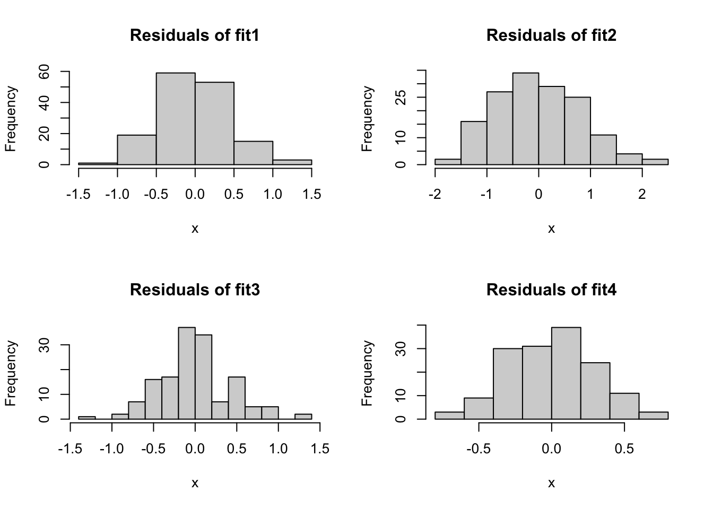

lapply(my_list, cor, method="kendall")ST558 Assignment 06
Task 1: Conceptual Questions
- What is the purpose of the
lapply()function? What is the equivalentpurrrfunction?
lapply will take a vector or list x and apply a function FUN over it, returning a vector the same length as x. The purrr equivalent is purrr::map().
- Suppose we have a list called
my_list. Each element of the list is a numeric data frame (all columns are numeric). We want to uselapply()to run the codecor(numeric_matrix, method = "kendall")on each element of the list. Write code to do this below!
- What are two advantages of using
purrrfunctions instead of theBaseR applyfamily?
There is greater type stability, and it allows for shorthand with anonymous functions.
- What is a side-effect function?
A side-effect function will do more than just to return a value based on inputs - it could change other variables outside of its own environment (like with <<-), or print to the console; or some other activity.
- Why can you name a variable
sdin a function and not cause any issues with thesdfunction?
Because of the rules of scoping. If you set, for instance, sd<-sd(vec), it will look for the sd() object, not find it set up within the function, and will look one or more levels higher until it finds the function. After the variable sd is set, any reference later to sd within the function will call the variable and not the higher-level sd function.
Task 2: Writing R Functions
- A common metric used to evaluate predictions is the Root Mean Square Error (RMSE). For a given set of responses \(y_1, ..., y_n\) and a set of corresponding predictions for those obserations \(\hat{y}_1, ..., \hat{y}_n\) the RMSE is \[RMSE=\sqrt{\frac{1}{n}\sum_{i=1}^{n}(y_i-\hat{y}_i)^2}\] Write a basic function (call it
getRMSE()) that takes in a vector of responses and a vector of predictions and outputs the RMSE.
- If a value is missing for the vector of responses (i.e, an
NAis present), allow for additional arguments to themean()function (use elipses) that removes theNAvalues in the computation.
getRMSE <- function (responses, predictions, ...) {
sqrt(mean((responses - predictions)^2, ...))
}- Run the following code to create some response values and predictions.
set.seed(10)
n <- 100
x <- runif(n)
resp <- 3 + 10 * x * rnorm(n)
pred <- predict(lm(resp ~ x), data.frame(x))- Test your RMSE function using this data.
getRMSE(responses=resp, predictions=pred)[1] 5.441253Repeat after manually replacing two of the response values with missing values (
NA_real_) (just assign two values toNA_real_).Test your RMSE function with and without specifying the behavior to deal with missing values.
# Pick 2 numbers 1-100 at random and change those to NA_real
resp[sample(1:100, 2)] <- NA_real_
# Just running as-is
getRMSE(resp, pred)[1] NA# Running once more with instructions to ignore missing values.
getRMSE(resp, pred, na.rm=TRUE)[1] 5.484418- Another common metric for evaluating predictions is mean absolute deviation given by \[MAE=\frac{1}{n}\sum_{i=1}^{n}|y_i-\hat{y}_i|\] Write a function called
getMAE()that follows the specifications of thegetRMSE()function.
getMAE <- function(responses, predictions, ...) {
mean(abs(responses - predictions), ...)
}- Run the following code to create some response values and predictions.
set.seed(10)
n <- 100
x <- runif(n)
resp <- 3 + 10 * x * rnorm(n)
pred <- predict(lm(resp ~ x), data.frame(x))- Test your MAE function using this data.
getMAE(resp, pred)[1] 3.877316Repeat after replacing two of the response vaues with missing values (
NA_real_).Test your MAE function with and without specifying the behavior to deal with missing values.
# Pick 2 numbers 1-100 at random and change those to NA_real
resp[sample(1:100, 2)] <- NA_real_
# Just running as-is
getMAE(resp, pred)[1] NA# Running once more with instructions to ignore missing values.
getMAE(resp, pred, na.rm=TRUE)[1] 3.910145- Let’s create a
wrapperfunction that can be used to get either or both metrics returned with a single function call. Do not rewrite your above two functions, call them inside the wrapper function (we would call thegetRMSE()andgetMAE()functions helper functions). When returning your values, give them appropriate names.
Additionally, the wrapper function should:
Check that two numeric (atomic) vectors have been passed (consider
is.vector(),is.atomic(), andis.numeric()). If not, the function should stop and print an informative message.Return both metrics by default and include names. The behavior should be able to be changed using a character string of metrics to find.
getMetrics <- function (resp, pred, mets=c("RMSE","MAE"), ...) {
checks <- c(is.vector, is.atomic, is.numeric)
checkResp <- all(sapply(checks, function(f) f(resp)))
checkPred <- all(sapply(checks, function(f) f(pred)))
if (!checkResp | !checkPred) {
stop("Both the Responses and Predictions must be Numeric, Atomic, and Vectors.")
}
helpers <- list(RMSE=getRMSE, MAE=getMAE)
helpers <- helpers[intersect(mets, names(helpers))]
lapply(helpers, function(h) h(resp, pred, ...))
}- Run the following code to create some response values and predictions.
set.seed(10)
n <- 100
x <- runif(n)
resp <- 3 + 10 * x * rnorm(n)
pred <- predict(lm(resp ~ x), data.frame(x))- Test your new function using this data. Call it once asking for each metric individually and once specifying both metrics.
# Calling just RMSE
getMetrics(resp, pred, "RMSE")$RMSE
[1] 5.441253# Calling just MAE
getMetrics(resp, pred, "MAE")$MAE
[1] 3.877316# Specifying both, though both would be presented by default
getMetrics(resp, pred, c("RMSE", "MAE"))$RMSE
[1] 5.441253
$MAE
[1] 3.877316- Repeat with replacing two of the response values with missing values (
NA_real_).
# Select two random numbers to replace.
resp[sample(1:100, 2)] <- NA_real_
# Specify RMSE, but do not using na.rm here.
getMetrics(resp, pred, "RMSE")$RMSE
[1] NA# Specify MAE, but DO use na.rm.
getMetrics(resp, pred, "MAE", na.rm=TRUE)$MAE
[1] 3.910145# Get both (leave blank) and using na.rm
getMetrics(resp, pred, na.rm=TRUE)$RMSE
[1] 5.484418
$MAE
[1] 3.910145- Finally, test your function by passing it incorrect data (i.e. a data frameor something else instead of vectors)
Task 3 - Practice with purrr
lm_fit1 <- lm(Sepal.Length ~ Sepal.Width + Species, data=iris)- Pull out the coefficients list element using
$,coef(), and thepluck()function frompurrr.
lm_fit1$coefficients (Intercept) Sepal.Width Speciesversicolor Speciesvirginica
2.2513932 0.8035609 1.4587431 1.9468166 coef(lm_fit1) (Intercept) Sepal.Width Speciesversicolor Speciesvirginica
2.2513932 0.8035609 1.4587431 1.9468166 library(purrr)
lm_fit1 |> pluck(coefficients) (Intercept) Sepal.Width Speciesversicolor Speciesvirginica
2.2513932 0.8035609 1.4587431 1.9468166 - Fit some different models with the following code:
lm_fit2 <- lm(Sepal.Length ~ Sepal.Width, data=iris)
lm_fit3 <- lm(Sepal.Length ~ Petal.Width + Sepal.Width + Species, data=iris)
lm_fit4 <- lm(Sepal.Length ~ Petal.Width + Petal.Length + Sepal.Width + Species, data=iris)
fits <- list(lm_fit1, lm_fit2, lm_fit3, lm_fit4)Use the purrr:map() function to pull out the coefficients of each model fit from the fits object (using pluck!)
fits |> map(pluck(coefficients))[[1]]
(Intercept) Sepal.Width Speciesversicolor Speciesvirginica
2.2513932 0.8035609 1.4587431 1.9468166
[[2]]
(Intercept) Sepal.Width
6.5262226 -0.2233611
[[3]]
(Intercept) Petal.Width Sepal.Width Speciesversicolor
2.5210733 0.3715768 0.6982260 0.9881297
Speciesvirginica
1.2375878
[[4]]
(Intercept) Petal.Width Petal.Length Sepal.Width
2.1712663 -0.3151552 0.8292439 0.4958889
Speciesversicolor Speciesvirginica
-0.7235620 -1.0234978 - There is a function called
confint()that creates confidence intervals for the coefficients in anlm()fit. We apply that function directly to the fitted object like this:
confint(lm_fit1) 2.5 % 97.5 %
(Intercept) 1.5206309 2.982156
Sepal.Width 0.5933983 1.013723
Speciesversicolor 1.2371791 1.680307
Speciesvirginica 1.7491525 2.144481Use map() to apply the confint() function to each model fit in the fits object.
fits |> map(confint)[[1]]
2.5 % 97.5 %
(Intercept) 1.5206309 2.982156
Sepal.Width 0.5933983 1.013723
Speciesversicolor 1.2371791 1.680307
Speciesvirginica 1.7491525 2.144481
[[2]]
2.5 % 97.5 %
(Intercept) 5.579865 7.47258038
Sepal.Width -0.529820 0.08309785
[[3]]
2.5 % 97.5 %
(Intercept) 1.74261803 3.2995285
Petal.Width -0.02042746 0.7635811
Sepal.Width 0.46205710 0.9343950
Speciesversicolor 0.44520784 1.5310516
Speciesvirginica 0.46412393 2.0110518
[[4]]
2.5 % 97.5 %
(Intercept) 1.6182321 2.72430044
Petal.Width -0.6140049 -0.01630542
Petal.Length 0.6937939 0.96469395
Sepal.Width 0.3257653 0.66601260
Speciesversicolor -1.1982739 -0.24885002
Speciesvirginica -1.6831329 -0.36386273- Let’s create histograms of the residuasl in each model fit. Run the code here to set up a 2x2 plotting window.
Pull out the residual vectors (resid) using map(). Then use walk() function with hist to create the plots.
par(mfrow = c(2,2))
fits |>
map(resid) |>
walk(hist)
- On the list that is created from the
map()function used on theresidelement, usepurrr::set_names()to give the names “fit1”, “fit2”, “fit3”, and “fit4” to the list of elements.
With the names set, we want to use the walk() function; however it doesn’t add the names appropriately. Instead we want iwalk(). On the result that has names, use iwalk() with an anonymous function that calls hist() and assigns the names appropiately.
par(mfrow = c(2,2))
fits |>
map(resid) |>
set_names(nm=c("fit1","fit2","fit3","fit4")) |>
iwalk(\(x, y) hist(x, main=paste("Residuals of", y)))